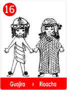
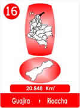
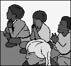
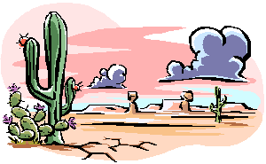
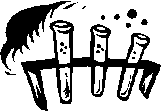
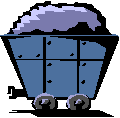
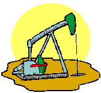
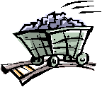

16 Los Pozos Mágicos - Guajira.
- Consulta a Jesús
- Fábulas de Colombia
- Metodo Corima
- Arbol
- Flor
- Fruto
- Estrellas Pequeñas
- Nostradamus
- La Ruta del Sol
- Fabula de Corima
- Productos y Servicios
- Mensajeros Celestiales
- Juguemos
- Articulos
- Estrellas Humanas
- Herramientas
- Plantas Milagrosas
- Adorables Fechas
- Videos


Timanay, huérfano de madre era el hijo del jefe de la Ranchería, el "Amanecer del Guajiro", allí creció al lado de abuelos, tíos y primos.

Desde los siete años, asistió a la escuela de las Madres Misioneras que lo recibieron en el internado, aprendió a leer y a escribir y terminó la primaria.
En vacaciones se quedaba con sus parientes, pero eran las historias del abuelo lo que más le gustaba.
"Abuelo, otra de tus historias, le decían los niños!
El abuelo empezaba: hace muchos años cuando el abuelo de sus abuelos, se estableció en esta tierra, nos recomendaba cinco tesoros muy importantes.
Respetar los rayos del Sol, que son muy fuertes,
Cuidar el Agua, que refresca la piel y los sembrados,
Cuidar la Sal que mejora los alimentos,
Trabajar para al trueque, para tener derecho al descanso y
Oír las voces del viento, para entender lo que tenemos dentro de nosotros.
El abuelo de sus abuelos, decía que con eso conseguíamos lo necesario.
Pero Timanay siempre preguntaba:
¿Por que el abuelo de los abuelos, creía que esta tierra era el tesoro para nuestro pueblo?
¿Yo he visto mejores tierras que dan harta yuca y plátanos y aquí toca siempre, darle al trueque.
Y el abuelo repetía: Es la costumbre, esta tierra es parte del tesoro, es el regalo encerrado en el viento, que hemos de entender, eso lo decía el abuelo de los abuelos "! Por algo será!
-Pero los pozos que huelen raro no dejan crecer la hierba, por aquí todo es como desierto y hasta les toca duro a las burras caminar y llevar tanta sal y las cuevas que dan miedo, son muy feas.

Nosotros tenemos un compromiso, no podemos abandonar la tierra en que vivimos, el abuelo de los abuelos decía, que era un tesoro y así ha sido, por años de años!
Cada vez que el abuelo contaba historias viejas, Timanay protestaba por los pozos que olían raro y las cuevas que daban miedo.
Pasó el tiempo y Timanay terminó la secundaria, se ganó el premio al mejor alumno y la beca para estudiar en la Universidad de la Capital.
Preocupado como siempre escogió Agronomía, para ver si las tierras podían producir algo mejor, para evitar burlas, decidió vestirse como los demás, se hizo llamar Tomás, siguiendo el consejo, "A la tierra que fueres, haz lo que
vieres".
Como amaba los libros, su preferencia estaba en la biblioteca, allí encontró un buen amigo, se llamaba Alberto y le decían Beto, también era de provincia y aunque estudiaba Química, se entendieron muy bien, Intercambiaban historias y anécdotas familiares, le contó su inquietud de niño, le habló de los pozos y de las cuevas que daban miedo.
Alberto le propuso que trajera algunas muestras, entonces Tomas viajó a su tierra y trajo las pruebas, para que su amigo las estudiara en el laboratorio.
El mismo día vio emocionado a Alberto ¡ Mira esto no me parece posible, si me permites se las voy a dar al profesor, talvez el también descubra lo que yo encontré!.

Tomás estuvo de acuerdo, solo le pidió, discreción. Esa misma tarde lo llamaron de urgencia al laboratorio y encontró a su amigo muy feliz y al profesor inclinado al microscopio que decía con voz emocionada:
Es el mejor petróleo que he analizado en toda mi vida, que octanaje!! Que maravilla. !!
Luego Tomás, Alberto y Don Luis idearon un plan.
Pedir audiencia con los representantes de las petroleras, llevar muestras y hacer el trueque, con condiciones para el pueblo de Timanay, el proyecto era ambicioso pero ideal para todos.
Sobre un papel se hizo la propuesta: Tierra fértil extensión igual la, Centro de Salud, Laboratorio, Taller para Mujeres, Casas con baño para cada familia, Acueducto, Energía, Campo de Deportes, Carreteras, Transporte de Bus, Tren, Volquetas, Tractor.
La tierra la elegiría el joven estudiante de Agronomía. Al enterarse el Rector de la Universidad, ofreció la colaboración de sus dependencias.
El sueño del que fuera niño se realizó! Se encontró petróleo, además minas de carbón, en las cuevas de las piedras feas.
La prosperidad llegó a la Ranchería "El Nuevo Amanecer del Guajiro".
  